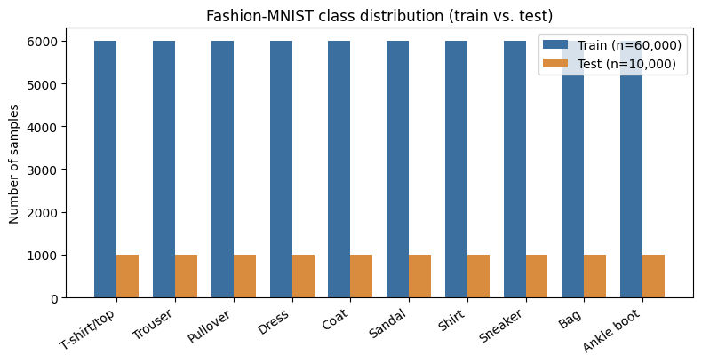
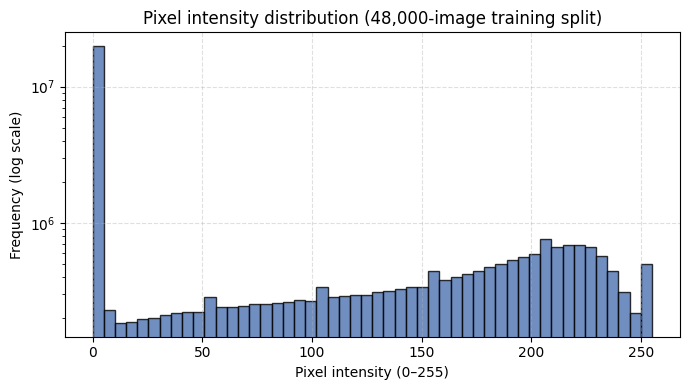
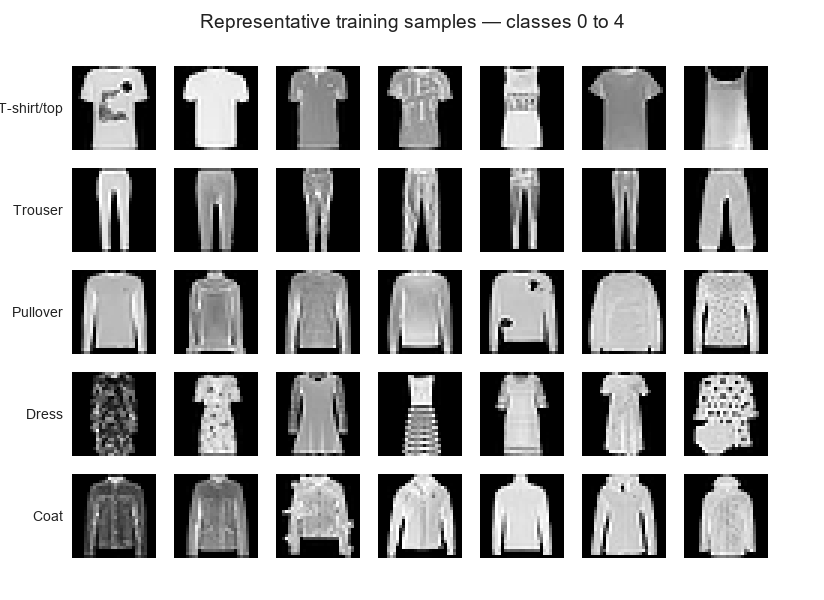
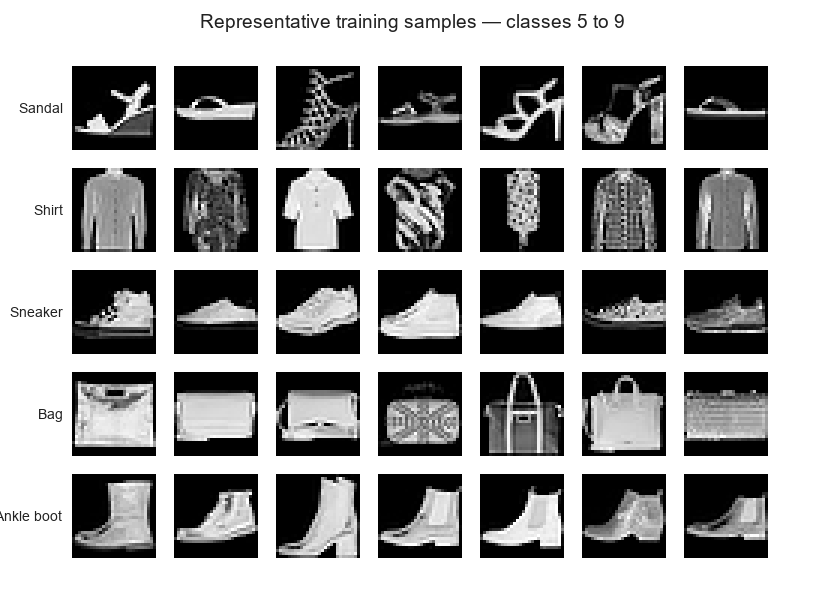

Assignment 1
Foundations of Deep Learning Pipelines and Architectures
From Linear Models to Modern Sequence Models: A Comparative Study for Image Classification
Instructor
Lê Thành Sách
Group members
Hoàng Xuân Bách · Nguyễn Việt Hùng · Lê Nguyễn Gia Phúc
Problem statement
Dataset description and EDA
Dataset description
Datasets, source and license
Two benchmarks from the MNIST family are involved. MNIST (handwritten digits) is used only while the pipeline is being built: checking DataLoader behavior, the forward and backward pass, and the evaluation metrics before any longer training run. It appears in none of the reported tables or figures. Fashion-MNIST is the primary dataset, and all five architectures (Linear/softmax, MLP, CNN, GRU/LSTM and Transformer) are trained, validated and tested on it with an identical split and evaluation protocol.
Fashion-MNIST was released in 2017 by Zalando Research (Han Xiao, Kashif Rasul and Roland Vollgraf) as a drop-in replacement for MNIST. It keeps the 28 × 28 grayscale format, the 10 classes and the 60,000 / 10,000 train/test split, but was designed as a more challenging benchmark. It is distributed under the MIT License (© 2017 Zalando SE) and hosted at github.com/zalandoresearch/fashion-mnist. We load the official release through torchvision.datasets.FashionMNIST, which reads the canonical IDX byte files.
Collection and labeling
The images are product photos from Zalando's online catalog. The original high-resolution color studio shots went through automatic background removal, aspect-ratio-preserving resizing, centering and downsampling to 28 × 28 grayscale. Each image carries exactly one of 10 mutually exclusive garment labels, taken from Zalando's product category hierarchy. Our team did no manual relabeling or label cleaning.
Format, counts and size
| Property | Value |
|---|---|
| Total samples | 70,000 (60,000 official train + 10,000 official test) |
| Raw sample format | 28 × 28, single channel, uint8 in [0, 255] |
| After ToTensor | float32 tensor of shape 1 × 28 × 28, values in [0.0, 1.0] |
| Annotation | One integer label y ∈ {0, …, 9} per image |
| Size on disk | ≈ 85.8 MB (raw torchvision directory) |
| Training pool in memory | ≈ 188.16 MB as float32 (60,000 × 28 × 28 × 4 bytes) |
| License | MIT (© 2017 Zalando SE) |
Table 1 — Fashion-MNIST at a glance
The sample counts were verified by inspecting the decompressed byte arrays directly. Table 2 lists the class mapping with those counts for the official training and test partitions, plus the mean pixel intensity of each class over the training partition (discussed in the EDA below).
| Label | Class | Train | Test | Mean intensity |
|---|---|---|---|---|
| 0 | T-shirt/top | 6,000 | 1,000 | 83.03 |
| 1 | Trouser | 6,000 | 1,000 | 56.84 |
| 2 | Pullover | 6,000 | 1,000 | 96.06 |
| 3 | Dress | 6,000 | 1,000 | 66.02 |
| 4 | Coat | 6,000 | 1,000 | 98.26 |
| 5 | Sandal | 6,000 | 1,000 | 34.87 |
| 6 | Shirt | 6,000 | 1,000 | 84.61 |
| 7 | Sneaker | 6,000 | 1,000 | 42.76 |
| 8 | Bag | 6,000 | 1,000 | 90.16 |
| 9 | Ankle boot | 6,000 | 1,000 | 76.81 |
| All classes | 60,000 | 10,000 | 72.94 |
Table 2 — Class mapping, sample counts and mean pixel intensity (0–255)
Bias and limitations
- Catalog bias: every image comes from studio photography with even lighting, centered framing and clean frontal or side views. Results on this benchmark say little about consumer photos with clutter, odd angles or uneven light.
- Silhouette ambiguity: at 28 × 28, stitching, fabric weave, buttons and collars are mostly gone. T-shirt/top, Shirt, Pullover and Coat have very similar outlines, which is a built-in obstacle for linear and shallow models.
- Artificial class balance: each class holds exactly 10.0% of the data, whereas real retail catalogs are skewed toward some categories. The upside is that a weak result on one class cannot be blamed on too few examples of it.
Exploratory data analysis
All statistics and plots below were computed on the raw tensors, without downsampling, in our EDA notebook (Assignment1_EDA.ipynb).
Integrity and class balance
Every image in the training and test partitions is exactly 28 × 28 × 1. We found no corrupted files, missing entries or shape mismatches, so all five architectures read the same pixel grid. What differs is how each one treats it: spatial convolutions, recurrence over rows, attention over tokens, or plain flattening.
Figure 1 shows the class counts for both partitions. The standard deviation of the class counts is zero in each, which gives exactly 6,000 training and 1,000 test images per category. A majority-class guess would score only 10.0%, so overall accuracy remains a meaningful headline metric. We still report macro-F1 and full confusion matrices to catch uneven behavior on the overlapping categories. With balanced classes, a low F1 on a class such as Shirt points to how hard that class is to represent rather than to a shortage of training samples.

Pixel intensity
Over the 60,000 × 28 × 28 = 47,040,000 pixels of the raw training pool, the global statistics on the 0–255 scale are μraw = 72.94 and σraw = 90.02. The log-scale histogram in Figure 2 is strongly bimodal. Exactly 50.2% of all pixels are zero, the black studio background, and the remaining mass spreads over 1–255 and corresponds to the garment body, folds and surface texture.

Mean intensity per class (last column of Table 2) works as a rough proxy for how much of the frame a garment fills. Sandal (34.87) and Sneaker (42.76) are lowest because of the wide empty margins around them. Pullover (96.06) and Coat (98.26) are highest, since they take up most of the frame. Total foreground area is therefore a low-level cue that even a linear model can use to separate footwear from apparel.
Sample inspection
Figures 3 and 4 show seven randomly selected training images per class (seed 42). Two patterns stand out. Some classes vary a great deal internally: Bag covers handbags, backpacks and clutches with different shapes and strap layouts, which calls for nonlinear decision boundaries. And T-shirt/top, Shirt, Pullover and Coat blur into each other. Low contrast and the absence of color or material cues make this group the most likely source of confusion-matrix errors, a hypothesis we revisit in the error analysis.


Consequences for preprocessing and splitting
Raw intensities run from 0 to 255 and half the pixels are zero, so inputs are scaled to [0, 1] and then standardized with μ = 0.2860 and σ = 0.3530, computed on the training split only. Because every image has the same 28 × 28 grid, the same tensor transformations apply to all models, with no cropping or resizing.
The official 60,000-image training pool is divided into 48,000 training and 12,000 validation images by stratified sampling (sklearn.model_selection.train_test_split, global seed 42), which gives exactly 4,800 and 1,200 images per class. The 10,000 official test images stay untouched until final evaluation. The split is made on the raw uint8 arrays before any statistic is computed, so no validation or test pixel enters μ or σ.
| Subset | Source | Samples | Per class |
|---|---|---|---|
| Train | 80% of the official training pool (stratified) | 48,000 | 4,800 |
| Validation | 20% of the official training pool (stratified) | 12,000 | 1,200 |
| Test | Official test set | 10,000 | 1,000 |
| Total | Official training pool + official test set | 70,000 | 7,000 |
Table 3 — Data partitioning and class distribution
Methodology
Pipeline overview
Pipeline overview diagram following Section 3.2 of the Course Project Handbook:
Mandatory models
| # | Model | Architecture | Input representation | Loss | Metrics | Strengths & limits | Params | Library vs. Self-implemented |
|---|---|---|---|---|---|---|---|---|
| 1 | Linear / softmax | Flatten 2D image into 784-dim vector (x.view(x.size(0), -1)) followed by a single fully
connected layer nn.Linear(784, 10) computing affine transformation
z = W·x + b. Strictly returns raw unnormalized logits without intermediate hidden layers,
activations, or softmax in forward pass.
|
Flattened 1D vector x ∈ ℝ⁷⁸⁴ (1×28×28 pixels) |
nn.CrossEntropyLoss (raw logits; no softmax applied inside model) |
Accuracy (Top-1), Macro-F1, training time, inference latency |
Strengths: Highly interpretable linear weights, minimal compute & memory
($O(1)$), convex loss surface. Limits: Severe underfitting; incapable of capturing non-linear interactions or spatial hierarchies. |
7,850 |
Self-implemented: LinearClassifier class & forward flattening
flow.Library: torch.nn.Linear, torch.nn.CrossEntropyLoss.
|
| 2 | MLP |
Deep feedforward network with 3 hidden dense layers (hidden_dims=(256, 64, 64),
dropout=0.3):• Linear(784, 256) → ReLU(inplace=True) → Dropout(0.3)• Linear(256, 64) → ReLU(inplace=True) → Dropout(0.3)• Linear(64, 64) → ReLU(inplace=True) → Dropout(0.3)• Output layer: Linear(64, 10) to 10 class logits.(Sequential dense stack without batch normalization, regularized via dropout). |
Flattened 1D vector x ∈ ℝ⁷⁸⁴ |
nn.CrossEntropyLoss (raw unnormalized logits) |
Accuracy (Top-1), Macro-F1, training time, inference latency |
Strengths: Universal function approximator capable of non-linear decision
boundaries. Limits: Destroys 2D geometry upon flattening; lacks translation invariance; dense parameters prone to overfitting. |
222,218 |
Self-implemented: MLP class, dynamic layer construction, dropout
regularization.Library: torch.nn.Linear, torch.nn.ReLU,
torch.nn.Dropout, torch.nn.Sequential.
|
| 3 | CNN (self-designed) |
Custom 3-block ConvNet (SimpleCNN, no pretrained backbone) structured into feature
extractor and classifier head:• Features: – Block 1: Conv2d(1, 64, 3, pad=1) → BatchNorm2d(64) →
ReLU → MaxPool2d(2) (28→14)– Block 2: Conv2d(64, 128, 3, pad=1) → BatchNorm2d(128) →
ReLU → MaxPool2d(2) (14→7)– Block 3: Conv2d(128, 128, 3, pad=1) → BatchNorm2d(128) →
ReLU (7×7 feature maps)• Classifier: AdaptiveAvgPool2d(1) → Flatten() →
Dropout(0.3) → Linear(128, 10).
|
2D spatial tensor (B, 1, 28, 28) preserving image coordinate grid |
nn.CrossEntropyLoss (raw unnormalized logits) |
Accuracy (Top-1), Macro-F1, training time, inference latency |
Strengths: Strong spatial inductive bias (locality & translation equivariance);
parameter sharing enables high expressiveness. Limits: Slower training per batch than MLP; fixed receptive field determined by kernel size and depth. |
224,010 |
Self-implemented: Complete custom ConvNet architecture (SimpleCNN, no
pretrained backbone).Library: torch.nn.Conv2d, torch.nn.BatchNorm2d,
torch.nn.MaxPool2d, torch.nn.AdaptiveAvgPool2d,
torch.nn.Flatten, torch.nn.Dropout, torch.nn.Linear.
|
| 4 | LSTM or GRU |
Under development
Architecture, input representation, parameters, and evaluation are currently in progress.
|
||||||
| 5 | Transformer |
Under development
Vision Transformer patch tokenization, attention layers, and evaluation are currently in progress.
|
||||||
Experimental setup
To ensure strict experimental fairness (Section 12.2 of the Course Project Handbook), all models were trained under a unified, identical protocol. The hyperparameters, optimization policies, and execution environment are detailed below:
| # | Setup / Hyperparameter | Value / Policy | Design Rationale & Protocol Notes |
|---|---|---|---|
| 1 | Optimizer | torch.optim.Adam |
Uniform optimizer family applied across all architectures |
| 2 | Learning rate | Initial lr = 1e-3 (0.001); minimum min_lr = 1e-6 |
Standard robust baseline for Adam on normalized Fashion-MNIST pixel tensors; dynamically reduced upon plateauing. |
| 3 | Batch size | 128 |
Constant across train_loader, val_loader, and test_loader
(with drop_last=False and num_workers=2). Balances gradient estimation
stability with GPU throughput. |
| 4 | Epochs | Maximum 100 epochs (governed by early stopping) |
Upper bound ensuring complete convergence |
| 5 | Scheduler | ReduceLROnPlateau(mode="min", factor=0.5, patience=3, threshold=1e-4) |
Monitors validation loss; decays learning rate by 50% when validation loss ceases to improve for 3 consecutive epochs, enabling fine-grained convergence near local minima. |
| 6 | Regularization |
• MLP: Dropout(p=0.3) after each hidden ReLU layer.• CNN: BatchNorm2d across all conv blocks + Dropout(p=0.3)
before final classification head.• Input normalization: Grayscale pixels scaled to $[-1, 1]$ via transforms.Normalize((0.5,), (0.5,)).• Capacity ceiling: Hard parameter constraint $\le 200\text{K}$ parameters. |
Prevents co-adaptation and deep weight overfitting while stabilizing internal covariate shifts throughout convolutional feature representations. |
| 7 | Early stopping | patience = 8 epochs; tolerance threshold $\Delta = 10^{-4}$ on val_loss
|
Automatically halts training if val_loss < best_val_loss - 1e-4 is not achieved
within 8 consecutive epochs, saving computation and mitigating late-stage over-adaptation. |
| 8 | Checkpoint criterion | Minimum Validation Loss (best_val_loss) |
The exact model state (state_dict) yielding the lowest validation loss is deep-copied
in memory and persisted to Google Drive (CKPT_DIR). Automatically restored for final test
evaluation. |
| 9 | Seed | SEED = 42 (N_SEEDS = 1 primary run; full seed protocol) |
Deterministic random seed set across random.seed(42),
numpy.random.seed(42), torch.manual_seed(42), and
torch.cuda.manual_seed_all(42) to ensure bit-exact reproducibility.
|
| 10 | Hardware | NVIDIA Tesla T4 GPU (15,360 MiB VRAM), Google Colab instance | OS: Linux 6.6 x86_64, PyTorch 2.11.0+cu128, Python 3.13.15. Device accelerated via CUDA
(device = "cuda"). |
| 11 | Mixed precision | Not used (Standard Single Precision FP32 across all models) | Guarantees deterministic arithmetic, prevents numerical underflow in lightweight models, and enables unskewed inference latency benchmarking. |
| 12 | Training time |
• Linear: ~536.2 s (~8.9 min) • MLP: ~1,173.2 s (~19.5 min) • CNN: ~1,117.4 s (~18.6 min) Total benchmark run: ~47.0 minutes |
Wall-clock execution time measured from initialization through early stopping trigger on identical hardware under GPU acceleration. |
| 13 | Hyperparameter selection method | Constrained architectural grid search & manual tuning | Layer dimensions and channel capacities were systematically sized so each architecture approaches but strictly adheres to the mandatory $\le 200\text{K}$ parameter ceiling. Optimization hyperparameters were shared across models to preserve fair comparison. |
Results
Comparison and discussion
Error analysis
Limitations and conclusion
AI usage — this assignment
Assignment-specific AI Usage Disclosure
Where AI was used
Where AI was NOT used
Links
| Content | Link |
|---|---|
| Source code (Assignment 1) | GitHub repository |
| Methodology (Models & Pipeline) | Assignment1/03_methodology |
| Experimental Setup (Protocol & Specs) | Assignment1/04_experimental_setup |